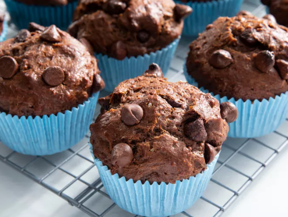

Home
Muffins

Description
Moist chocolate muffins are rich, soft, and tender treats filled with deep chocolate flavor. These tasty
chocolate muffins are scrumptious! Yogurt in the batter keeps them super moist while cocoa powder
and chocolate chips add a huge dose of chocolaty goodness. They're even better the next day. Perfect for
any chocolate lover, these muffins are ideal as a snack, dessert, or indulgent breakfast option.
Ingredients
- Flour
- Sugar
- Cocoa Powder
- Chocolate Chips
- Baking Soda
- Yogurt
- Milk
- Oil
- Egg
- Vanilla
Ingredients per 12 servings
- 2 cups all-purpose flour
- 1 cup white sugar
- 1 cup semisweet chocolate chips, divided
- ½ cup unsweetened cocoa powder
- 1 teaspoon baking soda
- 1 cup plain yogurt
- ½ cup milk
- ½ cup vegetable oil
- 1 large egg
- 1 teaspoon vanilla extract
Steps
- Gather ingredients.
- Preheat the oven to 400 degrees F (200 degrees C). Line 12 muffin cups with paper muffin liners.
- Combine flour, sugar, 3/4 cup chocolate chips, cocoa powder, and baking soda in a large bowl.
- Whisk yogurt, milk, oil, egg, and vanilla in separate bowl until smooth.
- Pour yogurt mixture into the chocolate mixture and stir until batter is just blended.
- Fill prepared muffin cups 3/4 full and sprinkle with remaining 1/4 cup chocolate chips.
- Bake in the preheated oven until a toothpick inserted in the center comes out clean, about 20 minutes. Cool in the pans for 10 minutes before removing to cool completely on a wire rack.